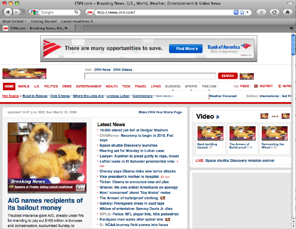

Design Challenge Tutorial: Stupid XPI Tricks - Kittens Everywhere
Install
- See directory stupid-extensions/kittens
- Mac and Linux: Make a file at ~/Profiles/stupid-tricks/extensions/kittens@evilbrainjono
The contents of the file should be:
~/stupid-extensions/kittens/
- Windows: Make a file at %USERPROFILE%\Profiles\stupid-tricks\extensions\kittens@evilbrainjono
The contents of the file should be:
%USERPROFILE%\stupid-extensions\kittens\
What's it do?
- When a web page is loaded, replaces every image with a random image from LOLcats.

How does it work?
Where to Learn More